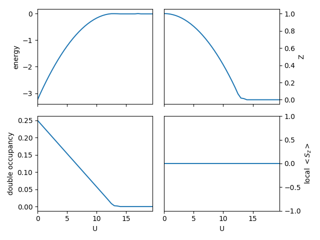
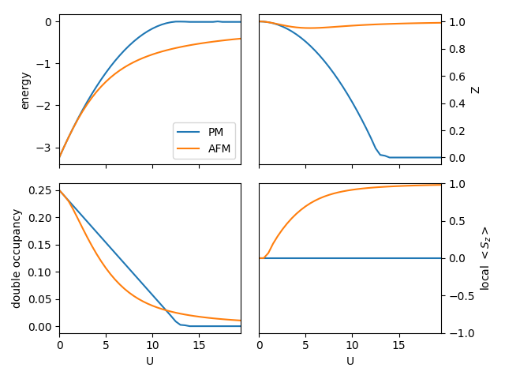
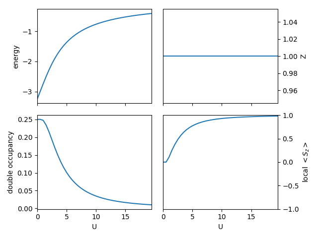
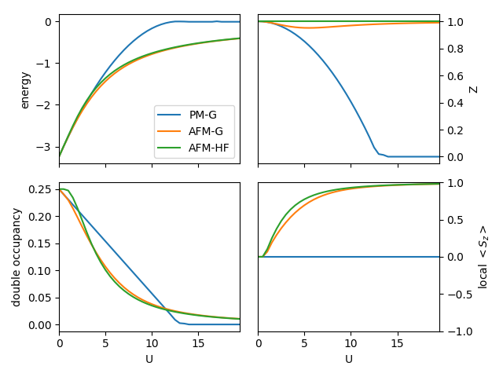
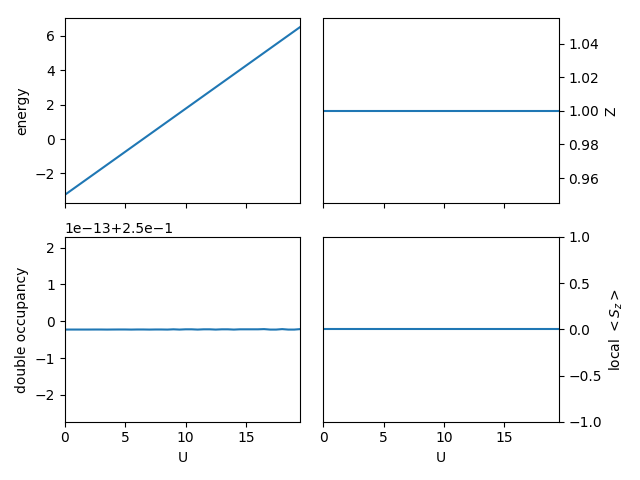
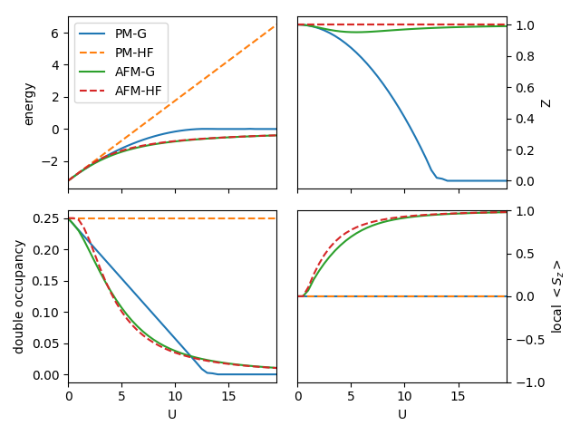

Checkboard lattice¶
In this example, we study 2-dimensional checkerboard lattice with nearest neighbor hopping. You will learn:
How to set up a finite dimension (here 2D) lattice with multiple sites per unit cell.
How to setup simple antiferromagnetic (AFM) calculations.
How the Gutzwiller method improves the descriptions at Hartree-Fock mean field level.
In the model, we use nearest neighbor hopping \(t\) as the energy unit. A function to setup the model for CyGutz calculation has been defined,
- pygrisb.model.checkboard.gutz_model_setup(u=0.0, spindeg=True, num_e=2.0, iembeddiag=- 2)[source]¶
Set up Gutzwiller calculations for 2d body-centered square lattice.
Parameters:
u: real number Hubbard U.
spindeg: boolean number whether to keep spin degeneracy or not.
num_e: real number number of electron per unit cell
iembeddiag: integer flag for method to solve the embedding Hamiltonian.
-3: valence truncation ED with S=0 (spin-singlet) constraint;
-1: valence truncation ED;
10: Hartree-Fock.
Result:
Create all the necessary input file of
GBareH.h5andGParam.h5for CyGutz calculation.
For convenience, we have also predefined a function to run CyGutz for a list of Hubbard \(U\) in paramagnetic (PM) or AFM phase.
- pygrisb.model.test.scan_checkboard.generate_data(u_list, spindeg=True, fname='result', iembeddiag=- 1)[source]¶
run CyGutz calculations for a list of U.
Parameters:
u_list: real array list of Hubbard U parameters.
spindeg: boolean number whether to keep spin degeneracy or not.
fname: string file name to store the results.
iembeddiag: integer flag for method to solve the embedding Hamiltonian.
-3: valence truncation ED with S=0 (spin-singlet) constraint;
-1: valence truncation ED;
10: Hartree-Fock.
Result:
save the list of energies (e_list), double occupancy (d_list), quasi-particle weight (z_list), magnetic moment (m_list), to
fname.dattext file as well as thefname.h5hdf5 file.
Let us perform a series of CyGutz calculations with increasing \(U\) in the PM phase, and check the behavior of the total energy, double occupancy, and quasi-particle weight (Z), in a similar way as in the example of Bethe lattice. Recall that in Gutzwiller-RISB theory, Z=0 implies the system is in the Mott insulating phase, where all the spectral weight becomes non-coherent.
A script for a job of scanning \(U\) in PM phase is defined as
- pygrisb.model.test.scan_checkboard.scan_u(spindeg=True, iembeddiag=- 1, fname='result')[source]¶
run CyGutz calculations for a list of U.
Result:
it will generate results for a u_list of np.arange(0.0, 5.1, 0.2).
For a hands-on practice, from the directory comrisb_tutorial/tutorials/checkboard_latt type the following command:
$ mkdir -p work && cd work
$ python ../scan_checkboard.py
It will automatically generate the following results:
{kind=link}
One can see similar generic feature of the local physical quantities as in the previous Bethe lattice calculations, albeit a larger \(U_{c}\) ~ 13 for the metal-insulator transition.
Now let us perform a similar scan of \(U\) for the checkerboard AFM phase, i.e., there are two sublattices with up and down local spin moment.
Type the same command with an inline argument of ‘-sp’ to trigger the setup of AFM phase:
$ python ../scan_checkboard.py -sp
Here the user is advised to review the previous function gutz_model_setup.
where spindeg changes to False by the inline argument ‘-sp’,
and ‘updn_full_list=[1,-1]’ will be used in the batch_initialize.
The following figure will be automatically generated:
{kind=link}
One can see that the local spin moment \(<S_{z}>\) rises from zero with increasing \(U\), and saturates at 1, as a half-filling single-orbital system. The kinetic energy renormalization factor \(Z\) shows a non-monotonic behavior – result of a competition between the effect of increasing onsite interaction, which will reduce \(Z\), and that of approaching empty/full filling of the single spin-orbital channels, evidenced by the rising local spin moment, as it is defined as \(<S_{z}> = <n_up> - <b_dn>\).
To compare the results of PM and AFM phase, type:
$ python ../plot_pmafm.py
One would get the following figure:
{kind=link}
It is clear that the magnetically ordered AFM phase has lower energy than the PM phase. As compared with PM solutions, the kinetic energy renormalization factor \(Z\) only changes marginally in the AFM phase. The local double occupancy decreases smoothly in a nonlinear way in AFM phase, in contrast to the linear decreasing in PM phase.
One would be interesting to see how the AFM solution obtained in the Gutzwiller method compare with the results from simple Hartree-Fock (HF) mean-field approach. The HF-type calculations can be conveniently be performed by typing:
$ python ../scan_checkboard.py -uhf
where the inline argument ‘-uhf’ changes the flag of iembeddiag to 10, corresponding to solve the embedding Hamiltonian of the Gutzwiller method at HF level. Upon execution of the above command, the following figure will be generated:
{kind=link}
One can see similar features as the results based on Gutzwiller calculations, but here the kinetic energy renormalization factor \(Z\) is a constant 1.
To compare the three calculations results together, type:
$ python ../plot_pmafm_gh.py
The following figure will be produced:
{kind=link}
As one can see, the Gutzwiller AFM solutions show much smoother variation of the local double occupancy, reduced local spin moment and smaller kinetic energy renormalization factor \(Z\), and lower in total energy, in comparison with HF results. It is consistent with the respect of variational principle, because the Gutzwiller approach provides more variational degrees of freedom by local Gutzwiller correlator.
One might be actually surprised for seeing that the spin-unrestricted HF (UHF)
results are not bad, although HF method is known to not able to
describe strong electron correlation effects.
The reason is that here we are looking at the symmetry breaking solutions,
where the static correlation due to the presence of (almost)
degenerate ground states has been removed.
In order yo visualize the static correlcation error in HF method,
one can check the HF PM solutions. Typing the following commands:
$ python ../scan_checkboard.py -rhf
The following results will be shown:
{kind=link}
One can clearly see the constant double occupancy and the consequent linear increasing of the total energy in the spin-restricted HF (RHF) calculations.
Finally, for comparisons with all calculations, type:
$ python ../plot_pmafm_gh2.py
The following produced figure clearly shows the static correlation error of RHF, as the RHF total energy deviates more and more with increasing \(U\).
{kind=link}
This concludes the tutorals for model calculations.